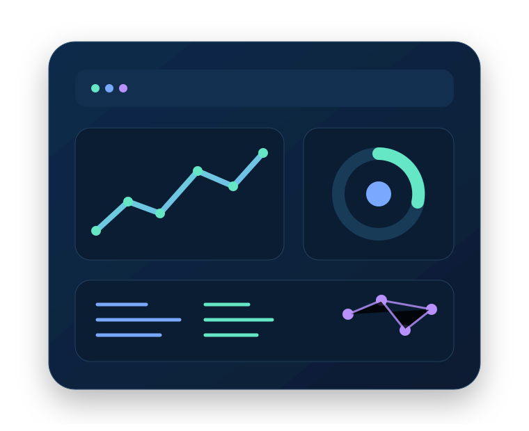
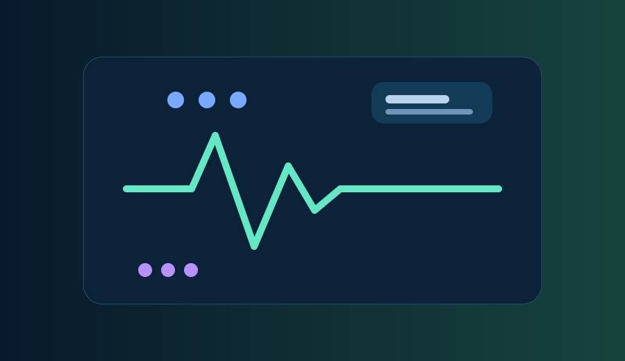

Data & Business Intelligence
Reporting, KPI analysis, data cleaning and decision-ready dashboards.
Based in Exeter, UK · Open to UK opportunities
MSc Advanced Computer Science graduate combining analytics, machine learning and full-stack development to turn complex problems into clear, reliable digital solutions.

About me
I am a UK-based technology professional with an MSc in Advanced Computer Science (Merit) from the University of Exeter and a B.E. in Information Technology. My work spans business intelligence, machine learning, computer vision, healthcare systems and full-stack web development.
I currently support Epic EPR and clinical systems in a live NHS environment, where accuracy, communication and reliable problem-solving matter every day. Previously, I worked across analytics and front-end development, building Power BI reporting, SQL workflows, REST APIs and a responsive React/Django web application.
Beyond analytics and software engineering, I also work with web design, responsive UI, Flutter app development, technical/on-page SEO, Google Ads and graphic design — useful skills for building digital products that are not only functional, but discoverable and user-friendly.
Capabilities
My strongest areas are analytics, AI/ML and full-stack delivery, with complementary digital skills for end-to-end product work.
Reporting, KPI analysis, data cleaning and decision-ready dashboards.
Applied ML pipelines, model evaluation, computer vision and intelligent systems.
Responsive front ends, backend APIs, databases and deployment-ready websites.
Cross-platform app development, version control and cloud fundamentals.
Practical optimisation for websites, campaigns and digital visibility.
Clear interfaces, visual communication and stakeholder-friendly technical delivery.
Selected projects
Computer Vision · MSc Dissertation
Built a real-time image classification pipeline using 8,500+ annotated images and benchmarked Faster R-CNN, RetinaNet, SSD VGG-16 and SSD MobileNet V3.

Machine Learning · Health Analytics
Benchmarked Random Forest, SVM, Decision Tree and Neural Network approaches for prediction from demographic and clinical data.
Full-Stack Development · Internship
Designed and delivered a responsive ReactJS and Django application with booking, payment and user-management workflows, supported by REST APIs.
Published Applied AI Project · 2023
Developed an AI-based monitoring system using facial recognition, object detection, audio monitoring and event logging in a secure backend architecture.
Experience
Royal Devon University Healthcare NHS Foundation Trust
Support clinical and non-clinical users across Epic EPR and related systems in a regulated, high-pressure environment. Maintain approximately 98% first-line resolution across 20–50 daily contacts while applying structured triage, documentation and escalation.
Virtual-E
Cleaned and analysed operational datasets, built Power BI dashboards and automated recurring reporting to reduce manual workload by 30%. Also improved REST API performance and contributed to a ReactJS/Django web application in an Agile team.
Shell & Tesco
Developed strong customer communication, accuracy and operational discipline in high-volume environments. Achieved a 19% Shell Go+ success rate and a peak Tesco online-order picking rate of approximately 203 items per hour.
Education & credentials
University of Exeter, UK
Machine Learning · Learning from Data · Fundamentals of Security · Computer Vision DissertationSaboo Siddik College of Engineering, Mumbai
AWS Cloud Foundations · AWS Cloud Computing · British Airways Data Science Virtual Experience
Let's connect
I am open to Data Analyst, BI Analyst, AI/ML, junior data science, software and full-stack opportunities across the UK.